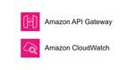
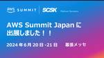
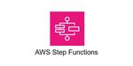

TechHarmony
https://blog.usize-tech.com
エンジニアブログ by SCSK
フィード
ランサムウェア攻撃に備える！最後の砦といえるバックアップ
TechHarmony
こんにちは。SCSKの田中です。 本記事では、ランサムウェア対策の最後の砦ともいえるバックアップの重要性やポイントについてご紹介します。 なお本投稿の前段にあたる投稿は以下のリンクよりご覧いただけます。 「ランサムウェア […]
8時間前

【後編】CatoクラウドのBackhaulingについて～Internet Breakout～
TechHarmony
本記事はBackhaulingの「Internet Breakout」についてのご紹介です。 Local gateway IPについては、前編をご参照ください。 【前編】CatoクラウドのBackhaulingについて～ […]
14時間前

Google Cloud Next Tokyo ’24 へ出展のお知らせ
TechHarmony
皆さん、こんにちは！SCSK株式会社の川原です。 今年も、Google Cloudが主催するグローバルカンファレンスイベント「Google Cloud Next Tokyo ’24」が開催されます！このイベン […]
1日前

Interop24 Tokyo 参加レポート
TechHarmony
坂木です。 2024年6月12日-6月14日にかけて、幕張メッセでInterop24 Tokyoが開催されました。 SCSKはZabbix Japanと共同で出展いたしましたので、出展内容や出展感想等をご紹介いたします。 […]
1日前

Amazon API Gateway のログを Amazon CloudWatch Logs に書き込むための IAM ロールはアカウント単位の設定です
TechHarmony
こんにちは、広野です。 Amazon API Gateway REST API のロギングにはいくつか種類と方法がありますが、Amazon CloudWatch Logs は他の AWS サービスのログを見るときにも日々 […]
2日前
Zabbix データベースモニタ設定方法
TechHarmony
こんにちは、SCSK株式会社の小寺崇仁です。 今回は「データベースモニタ」について設定方法を紹介します。 データベースモニタとは Zabbixのアイテムタイプに「データベースモニタ」があります。 データベースモニタでは、 […]
2日前
Zabbix Java(JMX)監視の方法
TechHarmony
こんにちは、SCSK株式会社の小寺崇仁です。 今回は「Java(JMX)監視」について設定方法を紹介します。 Java(JMX)監視とは Javaのプロセス内部は複雑で、独自のメモリ管理や、様々な処理が行われています。Z […]
2日前
Zabbix 7.0 新機能検証 (ブラウザモニタリング編)
TechHarmony
こんにちは、SCSK株式会社の小寺崇仁です。 先日Zabbixの7.0がリリースされました。 今回は「ブラウザモニタリング」について検証していきます。 ブラウザモニタリングとは ブラウザモニタリングとは、アイテムのタイプ […]
5日前

Prisma Cloud の主要機能の１つ CWPP のアーキテクチャを解説
TechHarmony
みなさんこんにちは、鎌田です。 Prisma Cloud を使ったサービス開発、運営を行っている中での気づきや、使いこなし方などを皆さんと共有することで、クラウドセキュリティの重要性の認知度や対策レベルをみんなで徐々に上 […]
5日前
Amazon Inspector の Lambda コードスキャンで Python3.12 のランタイムがサポート対象になっていました
TechHarmony
こんにちは。SCSKのふくちーぬです。 2024/6/26時点で、Amazon InspectorのLambdaコードスキャンがPython3.12のランタイムでも動作確認できたので紹介します。 Amazo […]
5日前

AWS Summit Japan 2024に出展しました！ 1
1
TechHarmony
こんにちは、SCSK株式会社の川原です。 6月20日～21日の2日間にわたり、幕張メッセで開催された”AWS Summit Japan 2024“に出展しました。 SCSKはプラチナスポンサーとし […]
6日前
【前編】CatoクラウドのBackhaulingについて～Local gateway IP～
TechHarmony
CatoクラウドのBackhaulingという機能はご存知ですか？ 通常、Catoクラウド経由でインターネット接続をする際、トラフィックはCatoクラウドのPoPから出力されますが、Backhaulingを利用することで […]
7日前
AWS Summit Japan 2024 参加レポート
TechHarmony
こんにちは。SCSKのふくちーぬです。 2024/6/20(木)～2024/6/21(金)に開催されたAWS Summit Japan 2024 に参加してきました。 AWS Summit Japan | 2024 年 […]
7日前
AWSアーキテクチャ図についてちゃんと知る
TechHarmony
こんにちは、ひるたんぬです。 先日AWS Summit Japanに初参加してきました。 最初から最後まで、その規模の大きさに圧倒され、あっという間に一日が経っていました。 参加レポについてはTechHarmonyにおい […]
9日前

Lambda要らず？AWS Step Functionsから直接APIを叩いてみた！
TechHarmony
どうもこんにちは、SCSKの齋藤です。 みなさんは先日のAWS Summit Japanに参加しましたか？ 相変わらずの熱狂ぶりがすごかったですね〜 多くのセッションを通じて学びを得れたのと、社内外多くの知り合いに再会で […]
9日前
【CSPM】Prisma Cloud と AWS Security Hub の違いを解説
TechHarmony
クラウドセキュリティは、多くの企業にとって必須の検討事項です。クラウドセキュリティを強化するため、CSPM（Cloud Security Posture Management）ツールの導入を検討すると、ツール選定が必要に […]
11日前
Zabbixのデータベース解説(#2アイテム＆トリガー編)【非公式】
TechHarmony
こんにちは、SCSK株式会社の小寺崇仁です。 このブログではZabbixのデータベース内部構成について紹介をしたいと思ってます。 第2弾としてアイテム、トリガーの設定を取得するSQLを作成してみます。 はじめに 私はZa […]
12日前
AWS AppSync リゾルバ (VTL) の書き方サンプル No.8 – Amazon DynamoDB 応用編 2つのクエリをアトミックに実行
TechHarmony
こんにちは、広野です。 AWS AppSync を使用したアプリケーションを開発する機会があり、リゾルバ、主に VTL の書き方に関してまとまった知識が得られたので紹介します。前回からの続きもので、今回は 1つの VTL […]
13日前

【ご紹介動画】5分で解説！HAクラスターソフトウェア「LifeKeeperとは？」
TechHarmony
こんにちは、SCSK 池田です。 新しい試みとして、LifeKeeperの紹介動画を作成しました。 第一弾として、昨年11月に記事を掲載させていただいた「第１回 HAクラスタウェア「LifeKeeper」で可用性を高めよ […]
13日前
AWS AppSync リゾルバ (VTL) の書き方サンプル No.7 – Amazon DynamoDB 応用編 2つのクエリを直列に実行
TechHarmony
こんにちは、広野です。 AWS AppSync を使用したアプリケーションを開発する機会があり、リゾルバ、主に VTL の書き方に関してまとまった知識が得られたので紹介します。前回からの続きもので、今回は 1つの VTL […]
14日前
Zabbix 7.0 新機能検証 (ポーリングの高速化編)
TechHarmony
こんにちは、SCSK株式会社の小寺崇仁です。 先日Zabbixの7.0がリリースされました。 Zabbix7.0では、様々な機能追加、改善が行われております。 詳細は以下をご確認ください。 What's new in Z […]
15日前
Zabbix 7.0 LTS 新機能：多要素認証機能 (Duo認証) を利用してみた
TechHarmony
こんにちは、SCSK株式会社の中野です。 2024年6月に最新バージョンであるZabbix 7.0 LTSがリリースされました。 Zabbix 7.0の新機能をいろいろ試しておりまして、今回は多要素認証機能（Duo認証） […]
15日前
Zabbixのデータベース解説(#1ホスト編)【非公式】
TechHarmony
こんにちは、SCSK株式会社の小寺崇仁です。 このブログではZabbixのデータベース内部構成について紹介をしたいと思ってます。 第1弾としてホスト設定を取得するSQLを作成してみます。 はじめに 私はZabbixの構築 […]
15日前
Zabbix 7.0 LTS 新機能：多要素認証機能 (TOTP) を利用してみた
TechHarmony
こんにちは、SCSK株式会社の中野です。 2024年6月4日に最新バージョンであるZabbix 7.0 LTSがリリースされました。 Zabbix 7.0の新機能として新たに多要素認証がサポートされましたので、機能の利用 […]
15日前
AWS AppSync リゾルバ (VTL) の書き方サンプル No.6 – Amazon DynamoDB 応用編 引数内のフラグにより処理を分ける
TechHarmony
こんにちは、広野です。 AWS AppSync を使用したアプリケーションを開発する機会があり、リゾルバ、主に VTL の書き方に関してまとまった知識が得られたので紹介します。前回からの続きもので、今回は引数内のフラグ条 […]
15日前
2023 Japan AWS Jr. Championsの活動を終えて
TechHarmony
どうも、SCSK株式会社の2023 Japan AWS Jr. Championsの齋藤です。 2024年4月30日を持ちまして、2023 Japan AWS Jr. Championsの任期が満了しました。 Jr.Ch […]
16日前
Zabbix 7.0 LTSをインストールしてみた
TechHarmony
こんにちは、SCSK株式会社の中野です。 2024年6月4日に最新バージョンであるZabbix 7.0 LTSがリリースされましたので、 早速インストールしてみたいと思います。 今回は、AWS環境上にRHEL9.3を立て […]
20日前
【CSPM】Prisma Cloud の AttackPath ポリシーを解説
TechHarmony
Prisma Cloudでは、クラウドインフラストラクチャ全体の設定ミスやリスクを監視するために”ポリシー”と呼ばれるものを使用します。 ポリシーには複数のポリシータイプが存在しますが、その中でもAttackPathポリ […]
21日前
Informatica World 2024 @Las Vegas 参加レポート
TechHarmony
こんにちは。SCSＫ三上です。 今年もラスベガスで開催された、インフォマティカの“データマネジメント”の最大カンファレンスの一つである、 Informatica Worldに参加してきました！ 昨 […]
21日前
【近日開催！】AWS Summit Japan 2024「AWS愛が、凄い。SCSK」ブースのご紹介！
TechHarmony
こんにちは、SCSK株式会社の川原です。 いよいよ日本最大の “AWS を学ぶイベント” AWS Summit Japan 2024 が近づいてきました！SCSKはプラチナスポンサーとして、スポンサーセッションでの事例紹 […]
21日前
Google Cloud 認定資格を全冠したので軌跡をまとめてみる
TechHarmony
こんにちは。SCSKの江木です。 2024年5月にGoogle Cloud認定資格を全冠しました。 今回は、私が実際にどのように学習を進めてきたのか、具体的な勉強法や感想をお伝えしていきます。 これからGoogle Cl […]
22日前
【Google】【AIML】Googleが提供する『NotebookLM』が日本語対応されたので触ってみた
TechHarmony
こんにちは。SCSKの島村です。 Google が提供するAIノートブックアプリ「NotebookLM」をご存知でしょうか。 Gemini 1.5 Pro を搭載した更新版の NotebookLM を日本語を含 […]
22日前
【現地速報②】Snowflake Data Cloud Summit 24 Platform Keynoteまとめ
TechHarmony
みなさんこんにちは、SCSKの高本です。 前回、サンフランシスコで4日間に渡って開催される「Snowflake Data Cloud Summit 24」の初日6/3に開催されたOpening Keynoteに関する速報 […]
1ヶ月前
自治体総合フェアに出展しました！！
TechHarmony
こんにちは、SCSKの大石です。 2024年5月15日~17日に東京ビックサイトで自治体総合フェア 2024 が開催されました。 3日間開催されたうち、15日にSCSKもZabbix Japanと共同で出展しましたので、 […]
1ヶ月前
Cato クラウドで Egress IP を固定にする際の課題と推奨設定
TechHarmony
Egress IP を固定する目的 Cato クラウド経由でインターネットにアクセスする際、そのアクセス元IPアドレス (Egress IP) は不定であり、PoP ごとに用意されたIPアドレス範囲の中のものが利用されま […]
1ヶ月前
【現地速報①】Snowflake Data Cloud Summit 24 Opening Keynoteまとめ
TechHarmony
みなさんこんにちは（日本だとこんばんは？）、SCSKの高本です。 Snowflake の待望のフラグシップイベントであるSnowflake Data Cloud Summit 24が Moscone Center, Sa […]
1ヶ月前
【CSPM】Prisma Cloud の API を呼び出してみた
TechHarmony
今回はPrisma Cloud APIの解説をしていこうと思います。 その後、実際にPrisma CloudのAPIとPythonを用いてPrisma Cloudで検知した1か月分のアラート件数を取得するプログラムを作成 […]
1ヶ月前
【CSPM】Prisma Cloud で AWS 環境をチェックしてみた
TechHarmony
Prisma Cloudは、クラウド環境のセキュリティとコンプライアンスを一元管理するツールで、リアルタイムの脅威検出やリソースのチェックが可能です。 今回は、実際にAWS環境をPrisma Cloudに接続して、アラー […]
1ヶ月前
[SCSK] Interop Tokyo 2024 の Zabbix ブースに出展します！
TechHarmony
こんにちは。SCSKの上田です。 今年も、延べ12万人が来場する国内最大級のICTイベント「Interop Tokyo 2024」が、6月12日(水)～6月14日(金)の3日間、幕張メッセで開催されます。Interop […]
1ヶ月前
Amazon CodeCatalyst で AWS Lambda の CI/CD 環境を構築する
TechHarmony
こんにちは。ひるたんぬです。 春が終わりを告げ、夏が近づいてきましたね。 最近はニュースや新聞などで「今年は最も暑い」や、「観測史上一番の暑さ」「季節外れの暑さ」など、連日ホットな話題が報道されています。野菜やオリーブオ […]
1ヶ月前
第８回 AWS外からAWS内のHAクラスターシステムへどう接続する！？ ～ LifeKeeper ～
TechHarmony
こんにちは、SCSK 池田です。 すっかり桜も散り、新緑がまぶしい季節となりましたが、皆さまいかがお過ごしでしょうか？ ブログの更新が少しあいてしまいましたが、心機一転がんばっていきます！ さて、「第４回 【LifeKe […]
1ヶ月前
CatoクラウドでDevice Postureを利用したい
TechHarmony
Catoクラウドにリモート接続する際に、個人所有のPCやスマートデバイスなどのBYOD利用を制限するというニーズは多く、Catoのデバイス制御機能を使用しているお客様も数多くいらっしゃいます。 Catoのデバイス制御は、 […]
2ヶ月前
AWS Summit Japan 2024に出展します！
TechHarmony
こんにちは、SCSK株式会社の川原です。 今年も、延べ 30,000 人が参加する、日本最大の “AWS を学ぶイベント” AWS Summit Japan 2024が 6月 20 日（ […]
2ヶ月前
【GCP】ファイアウォールルールとファイアウォールポリシーを使いこなす
TechHarmony
こんにちは。SCSKの山口です。 先日、あるアーティストのライブに当選したのですが、当選通知＆料金支払いのメールが迷惑メールフォルダに入っていて、せっかくの強運が危うくオジャンになるところでした。 メールのフィルタリング […]
2ヶ月前
生成AIプロジェクトを本番稼働するために必要な4つの質問
TechHarmony
こんにちは。SCSK三上です。 今回は、先日参加したパートナー向けのAmazon Bedrockセミナーのセッションの1つにあった、 “本番稼働に至る生成AIプロジェクトにするための4つの質問” […]
2ヶ月前
【Snowflake】SSOを使用してPower BIから接続してみる
TechHarmony
こんにちは、SCSK松岡です。 本記事では、Power BIからSnowflakeにSSO(シングルサインオン)を使用して接続するための一連の手順と注意点をご紹介します。 Snowflakeに蓄積したデータをBIツールで […]
2ヶ月前
新入社員がブログを書き始めるきっかけとは！？
TechHarmony
みなさん、こんにちは。SCSKで飼われているひつじです！ 最近の私、なんと週3でサウナに通ってるんだ。サウナって最高だよね！ さてさて、半年前くらいからちょっとしたことがきっかけで、当社新人様の指導をすることになっちゃっ […]
2ヶ月前
Amazon Bedrock の Knowledge Base で文字変換をやってみた
TechHarmony
はじめまして。SCSK渡辺(大)です。 シティーハンターの実写映画が面白かったので続編を熱望しています。 今回は、Amazon Bedrock の Knowledge Base で 文字変換 をやってみました。 Pyth […]
2ヶ月前
【Snowflake】データ共有/複製機能を整理してみた
TechHarmony
こんにちは、SCSK松岡です。 本記事では、クラウドデータプラットフォームであるSnowflakeが提供する数多くの機能のうち、データの共有/複製に焦点を当ててご紹介します。 データ分析・活用基盤の構築において、データの […]
2ヶ月前
Cato クラウドの XDR 活用に向けた初めの一歩
TechHarmony
Cato クラウドの XDR Cato クラウドでは、ネットワークのトラフィックやエンドポイントの振る舞いなどの各種ログを Cato 独自の AI や機械学習アルゴリズムによって分析し、セキュリティ上の攻撃や脅威を自動的 […]
2ヶ月前